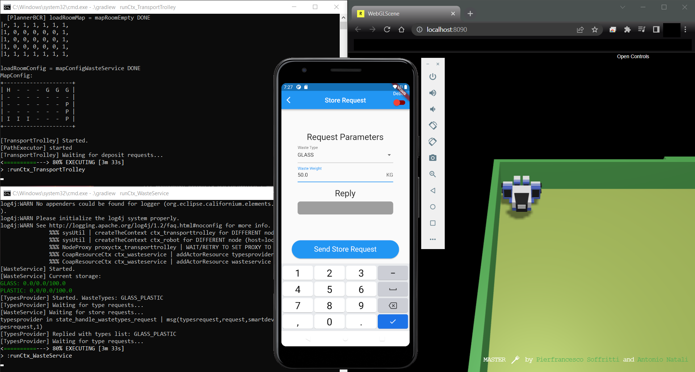

Sprint Conclusions
Summary
During Sprint 1 our team analyzed and implemented the software related to the Core-business of the system, trying to meet in the best way possible the customer requirements. We had been able to develop and test different softwares, to ease tasks like the map configuration, and to improve the system by making it scalable and flexible.We believe that our solution has many points of strength, which can be summarized as it follows:
- Actor Model
- Double counter for the storage management
- Types provider
- Optimized path
- Map configuration editing
The implemented softwares are the following:
SmartDevice Simulator - Echo Waste Server
- Map Editor BCR
WasteService
Task Partitioning
| Task | Description | Assignment |
|---|---|---|
| HTML document | Styling and formatting of the HTML document. |
|
| Project documents | HTML content and resources (models, diagrams, images, ...). |
|
| Problem Analysis |
Identification of the main topics to be analysed,
with the relative possible problems to be solved;
brainstorming on solutions, with the related motivations, and alternatives. |
|
| Problem Analysis: QAK model | Creation of a QAK model of the core-business, with just the main states and a draft of their behaviour and interactions. |
|
| Problem Analysis: Test Plan | Brainstorming about the functionalities and interactions to test and making of test classes to verify the correctness of the behaviour of the system, according to the first logical architecture, given by the QAK model. |
|
| Project: SmartDevice | Creation of the first element of the core-business chain: the (mobile) application used by the truck driver to interact with the Waste Service and deposit the truck load. |
|
| Project: EchoWasteServer | Creation of an application to ease the testing of the SmartDevice, especially on mobile devices. |
|
| Project: MapEditor | Utility application to ease the creation and edit of a configuration file for the room of the service area. |
|
| Project: WasteService | Development of the heart of the core-business: the WasteService software. It includes the creation of the QAK model, starting from the one of the Problem Analysis, the implementation of the plannerBCR Kotlin object to make use of the MapConfig file. |
|
| Test Plans | Test Plans related to projects, which include SmartDevice tests and WasteService tests. |
|
| Automated Demo | Test of single executable units and creation of a script program that automates the execution of the entire core-business. |
|
| Deployment | Packaging and deployment of the softwares and test on different architectures (Linux & MacOS). |
|
Demo Example
Setup
- Install Java (>8 or >11 if one wants to use the MapEditor);
- Install docker.
- Install gradle (>= 7.4).
- (Optional, if one doesn't have an Android device)
-
From the latest release on our GitHub repository, download:
- VirtualRobot docker image (
virtualRobotOnly4.0.yaml). - WasteService ZIP archive (
waste_service.zip). - SmartDevice APK (
smart_device.apk).
- VirtualRobot docker image (
Execution
-
Run the VirtualRobot (on Windows you first need to launch Docker Desktop):
docker-compose -f .\virtualRobotOnly4.0.yaml upOpen a browser (e.g. Chrome) and enter the following URL: "https://localhost:8090"
-
Run the WasteService by launching the script
Run_All_Ctx.bat(extracted from the ZIP archive).
-
Run the SmartDevice:
- (Recommended) Using a real Android device: just install the APK on the device and run it.
-
Using the emulator (to install emulators refer to Create and manage virtual devices):
:: launch the emulator flutter emulators --launch <emulator_id> :: run the application on the emulator :: (you need to be in the root directory of :: sprint1_smart_device project) flutter run - Using the Windows executable: run
sprint1_smart_device.exe.

SmartDevice running on Android Emulator.
Sprint Review
The interaction with the customer highlighted the following key points:-
Project
sprint1_waste_servicecontainsdifferent QAK files with the same actors , which generate confusion and useless files upon save. -
When trying to download and run the code, some
dependencies were missing on the GitHub repository, which were necessary to test the WasteService code. -
In the Test Plans section it's not much clear that the
testing of the business logic of the WasteService main components had been already carried out during the Problem Analysis. -
The customer was curious about our
decision to adopt Flutter to implement the SmartDevice and asked to give some more details on it. -
When showing the
demo to the customer we noticed that the order in which run the scripts and which ones to run, from the setup to the actual execution of the WasteService, was not much clear.
Bugs
-
We discovered that the
windows build for the SmartDevice has a bug when receiving the store request replies: it receives a fragmented reply, therefore the ApplMessage doesn't get parsed correctly. -
The solution adopted in order to
send the loadrejected instantly to the smart device, actually doesn't work as expected: since the deposit is a request, if the transport trolley is already busy performing another deposit action, the waste service actor cannot reply with loadrejected, until the transport trolley sends back a reply.
Sprint Retrospective
In order to address the problems outlined with the Sprint Review, we provided the following corrections:-
We
commented the unnecessary QAK files by changing the format in their filenames from ".qak" to ".noqak". -
We added the dependencies necessary to run the WasteService directly
to the
sprint1_waste_service zip. -
We inserted a
note at the beginning of the Test Plans section , saying that they prosecute from the problem analysis test plans. -
We added the
analysis of the related problem , with motivations and alternatives. -
We introduced a
demo example section , explaining how the scripts should be executed.
Work Plan
The next sprint is Sprint2, which involves the requirement 4.Sprint2 - RaspberryPi
The Sprint2 will involve the use of the RaspberryPi:- Implement the warning device (Led component).
- Implement the alarm device (Sonar component).
- Implement the stop/resume feature for the transport trolley.
- Make the robot stop and move to Indoor if a new store request is received while it's returning to Home.